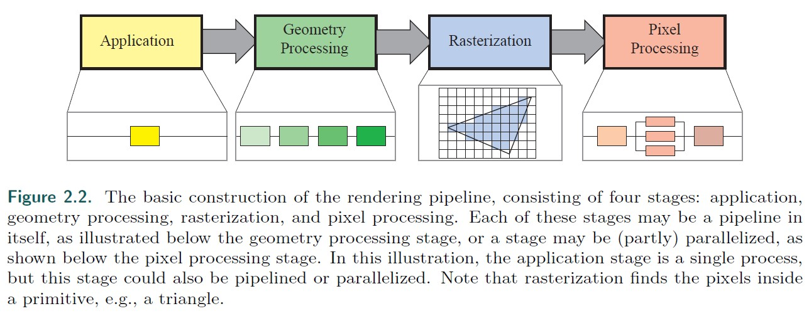
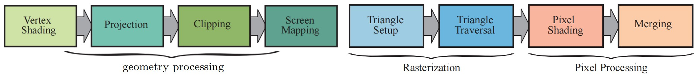
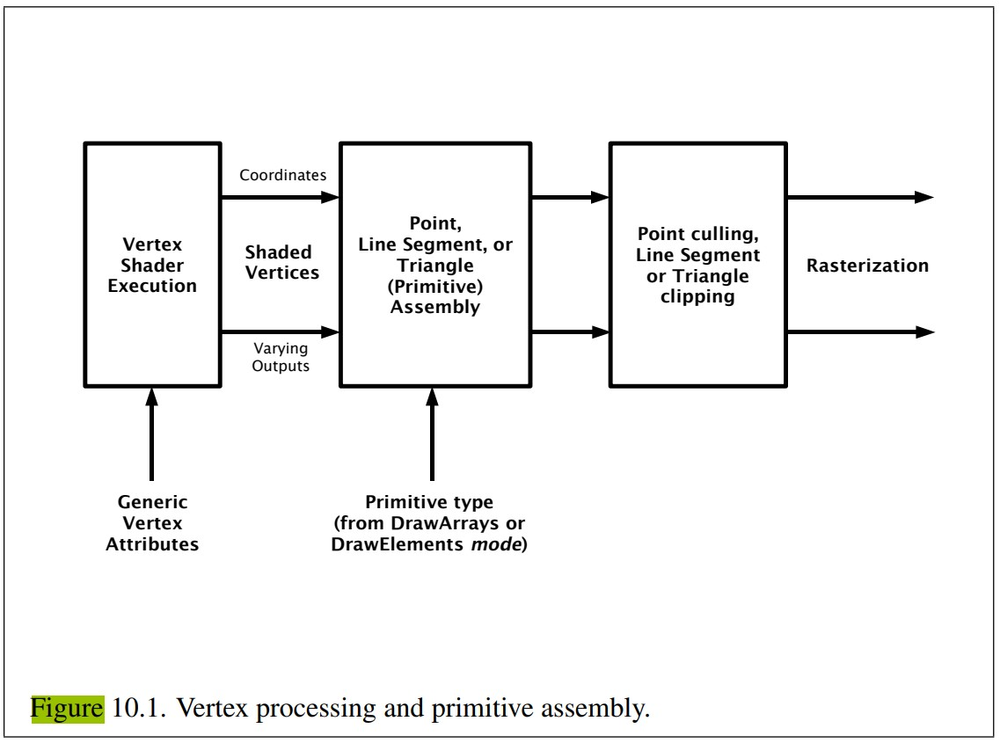
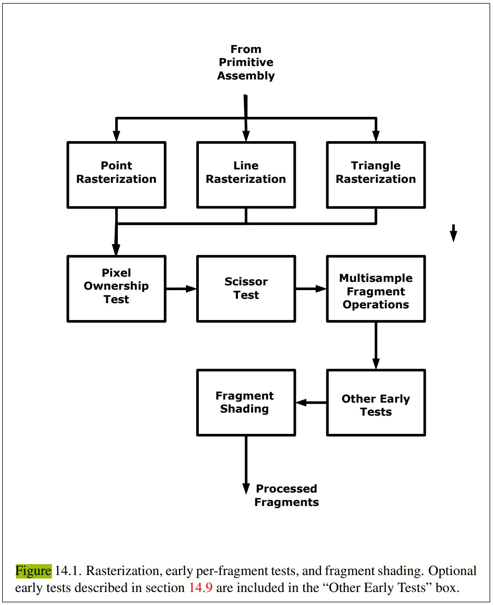
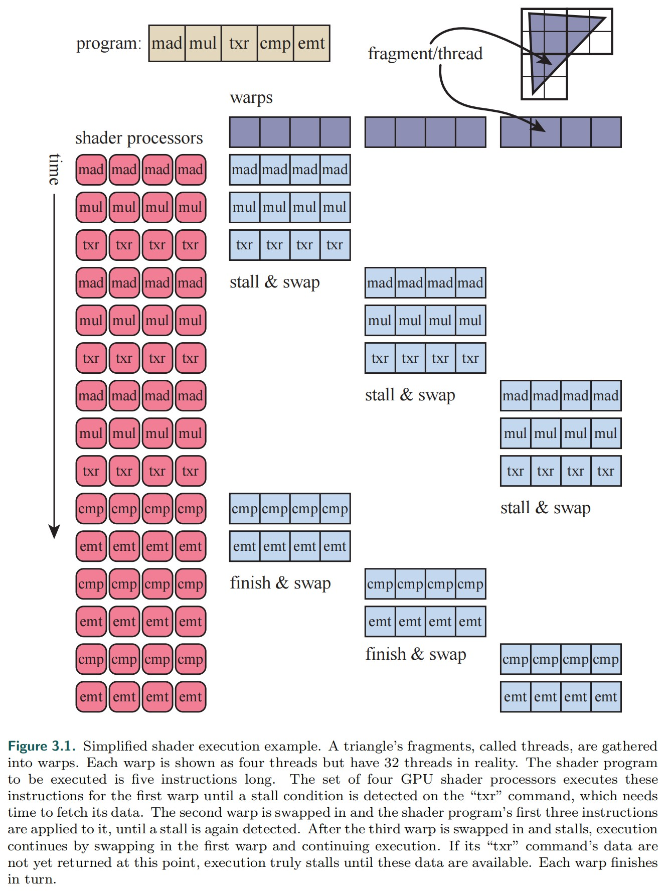
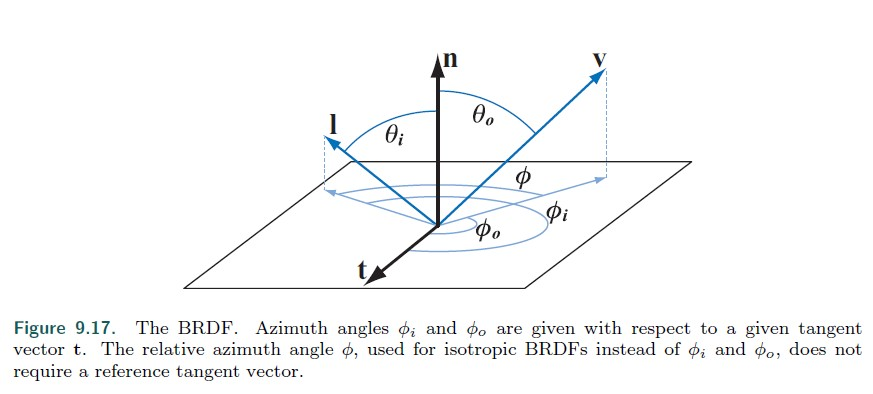
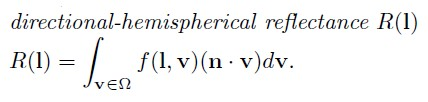
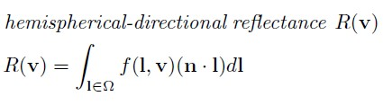
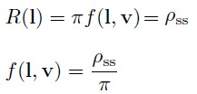

Real Time Rendering
Table of Contents
Real Time Rendering 第 4 版翻译.
<!– more –>
Real Time Rendering
02 The Graphics Rendering Pipeline
本章主要专注于 rendering pipeline 各个不同阶段的功能，而不是实现。
Architecture
pipeline 的各个阶段是并行执行的，每个阶段只依赖前一阶段的结果。理想情况下，一个非管线系统被分为 n 个管线阶段后，会得到 n 倍的加速。这是使用管线的主要原因。例如，制作三明治可以被划分为三个阶段，准备面包、添加肉、添加佐料。每个人负责一个阶段，每个阶段的结果会传递给下一个阶段。如果每个人都需要花费 20 秒完成自己阶段的任务，则制作出一个三明治需要的最短时间为 20 秒(使用管线之前，制作出一个三明治需要 60 秒)。
虽然管线阶段是并行的，但整个管线的速率是由最慢的阶段决定的。例如，制作三明治时，添加肉的阶段如果需要 30 秒，则制作出一个三明治需要的最短时间就会变为 30 秒。将花费时间最长的阶段称为瓶颈(bottleneck)。
下图为实时渲染管线示意图，整个管线被分为 4 个主要阶段，而每个阶段内部通常也是一个又被分成多个阶段的子管线。这里我们需要区分开功能阶段和该功能阶段的实现。一个功能阶段有一个特定的任务需要执行，但是并不指定该任务在管线中以何种方式执行。一个给定的实现可能会将两个功能阶段合并到一个单元，也可能使用可编程核心执行其中一个功能阶段，同时将另一个更耗时的功能阶段划分为几个硬件单元。

下图为实时渲染管线各个阶段的进一步划分：

渲染的速度可以通过 frames per second 来表达，其表示每秒渲染的帧的数量。也可以通过赫兹（Hz）表达，其表示更新的频率。还可以直接使用时间来表达，其表示渲染一帧花费的时间。FPS 可用于描述特定的帧，也可用于描述一段时间内平均的性能。赫兹通常用于硬件，例如，显示器，其通常被设置为一个特定的比率。
The Application Stage
Application Stage 由应用程序驱动，由开发者完全控制在该阶段执行哪些任务，通常在软件上实现，并在通用的 CPUs 上执行。依赖于应用程序的类型，Applicaton Stage 需要完成的任务可能有 collision detection, global acceleration algorithms, animation, physics simulation 等等。
使用 computer shader，一些 Application Stage 的工作也可以由 GPU 来执行，此时将 GPU 视为高度并行的通用处理器，忽略其专门用于渲染图形的特殊功能。
由于 Application Stage 的实现是基于软件的，因此该阶段没有像 Geometry Processing Stage, Rasterization Stage, Pixel Processing Stage 那样被划分为多个子阶段。但是，为了提升性能，Applicaton Stage 通常在多个处理器 Cores 上并行运行。
Application Stage 通常还会处理其他输入，如键盘、鼠标等等。在 Application Stage 的末尾，被渲染的几何会被传递给 Geometry Processing Stage。
Geometry Processing
vertex shader 的输出为执行了 MVP 变换后得到的齐次空间的坐标。

Rasterization
Rasterization 阶段的目标是找到所有被图元覆盖的像素，其被分为两个子阶段：triangle setup(primitive assembly)和 triangle traversal。Rasterization 也被称为 Scan Conversion(扫描转化)，因为其将屏幕空间上多个二维的顶点转换为了屏幕上的像素。
Triangle Setup(Primitive Assembly)阶段：在这个阶段，计算三角形的微分、边方程和其他数据。 这些数据可用于三角形遍历，以及几何阶段产生的各种着色数据的插值。用于执行此任务的硬件是固定功能的硬件(不可编程)。
Triangle Traversal 阶段：判断哪些像素或样本被三角形覆盖，对应生成片段(fragment)，通过插值生成片段属性（如果使用了透视摄像机，插值透视矫正也会执行）.
Pixel Processing

03 The Graphics Processing Unit
Data-Parallel Architectures
GPU 中的一些专用术语：
- Thread 为一个片段调用一次 pixel shader 被称为一个 thread。
- Warp/Wavefronts 使用相同 shader 程序的 threads 被分成多个组，这些组被称为 warps(NVIDIA) 或 wavefronts(AMD)。一个 warp 可以被调度到多个 GPU shader cores(通常是 8 到 64 个 shader cores)上按照 SIMD 的方式执行。每个 thread 被映射到一个 SIMD lane。
假如我们有一个 Mesh 被光栅化，然后该 Mesh 覆盖了 2000 个像素，生成了 2000 个片段。NVIDIA GPUs 一个 warp 包含 32 个 threads。2000/32=62.5，因此需要分配 63 个 warps，其中有一个 warp 的一半是空的。一个 warp 对应的 shader 程序会在 32 个 processors 上以 lock-step 的方式执行。执行中若需要获取内存，该 warp 中的所有的 threads 会同时需要获取内存（因为，为 warp 内所有的 threads 执行相同的指令），内存获取通知该 warp 阻塞，warp 内的所有 threads 都各自等待各自所需内存数据返回。被阻塞的 warp 会被置换出去，另一个不同的 warp 会被置换进来，继续在这 32 个 processors 上执行。因为，置换操作不会碰 thread 的任何数据（每个 thread 都有其自己的寄存器，每个 warp 记录其当前正在执行的指令），置换到新的 warp 只是将一组 cores 指向一组不同的 threads 来执行，所以，这种置换操作非常的快。如下图所示：

warp-swapping 机制是 GPU 用于隐藏延迟的主要机制。很多因素会影响隐藏延迟，如：
- 只有很少的 threads，因此只能创建很少的 warps。这导致没有足够的 warps 被置换。
- shader 程序的结构也会对隐藏延迟造成影响。每个 thread 所用的寄存器越多，就会导致 GPU 容纳的 threads、warps 越少。
- 内存获取频率也会对隐藏延迟造成影响。
当前驻留在 GPU 中的 warps 被称为“in flight”，驻留在 GPU 中的 warps 数量被称为占有率。高占有率意味着有很多 warps 可以被处理，processor 空闲的可能性就低。低占有率通常导致低性能。
dynamic branching 也会影响整体效率。如果所有的 threads 都走相同的分支，则 warp 可以不关心其他的分支。然而，如果一些 threads 甚至有一个 thread 走了其他分支，则 warp 需要执行两个分支的所有逻辑，并丢弃不需要的结果。
GPU Pipeline Overview
09 Physically Based Shading
The BRDF

我们忽略了荧光和磷光现象，因此，可以假定入射光的波长和出射光的波长相同。光的反射量可以随波长变化，通常通过两个方式来模拟，第一种是将波长当作 BRDF 额外的输入变量，第二种是 BRDF 的输出为光谱分布。通常第一种方式被应用于离线渲染，实时渲染使用第二种方式。实时渲染中使用 RGB 三元素来表示光谱分布，因此 BRDF 返回的是 RGB 值。
物理规律要求任何 BRDF 模型需要遵守两个约束：
- Helmholtz 互换性。即 f(l,v) = f(v,l)
实践中很多 BRDF 模型会违反该约束。违反该约束时，实时渲染通常不会有明显的 artifacts，但是离线渲染则不能违反该约束，因为其使用了双向路径追踪。 - 能量守恒。即出射能量要小于入射能量
离线渲染需要遵守该约束，以保证收敛性。实时渲染可以违反该约束，但是近似遵守能量守恒很重要，否则会导致画面过亮或者过暗。
directional-hemispherical reflectance R(l)是一个和 BRDF 相关的函数。其可用于测量 BRDF 遵守能量守恒的程度。其测量给定入射方向的光被反射到所有方向上的量：

hemispherical-directional reflectance R(v)是一个类似的函数。其测量所有方向入射的光被反射到给定方向上的量：

如果 brdf 遵守互换性，则 R(l)和 R(v)相等。当两者可以互换时，Directional albedo 通常作为 R(l)和 R(v)的统称。
由于能量守恒，R(l)的范围为[0,1]。R(l)=0 表示所有光都被吸收，R(l)=1 表示所有光都被反射。和 BRDF 一样，R(l)也会随波长变化，因此 R(l)也使用 RGB 值来表示。需要注意的是，作为一个分布函数，brdf 可以为任意正值，其范围为[0,∞]。
最简单的 BRDF 模型是 Lambertian。LambertianBRDF 为一个常数值，虽然其比较简单，但是实时渲染中通常使用其表示 local subsurface scattering。Lambertian 表面的 directional-hemispherical reflectance 也是一个常数 R(l) = πf(l, v)。Lambertian BRDF 对应的 R(l)通常被当作 diffuse color Cdiff 或 albedo ρ。此处，为了强调其与次表面散射的联系，我们将 R(l)称为 subsurface albedo ρss。

23 Graphics Hardware
Rasterization
所有的像素被按照 2x2 的方式组合，这样就可以实现 ddx ddy 了。